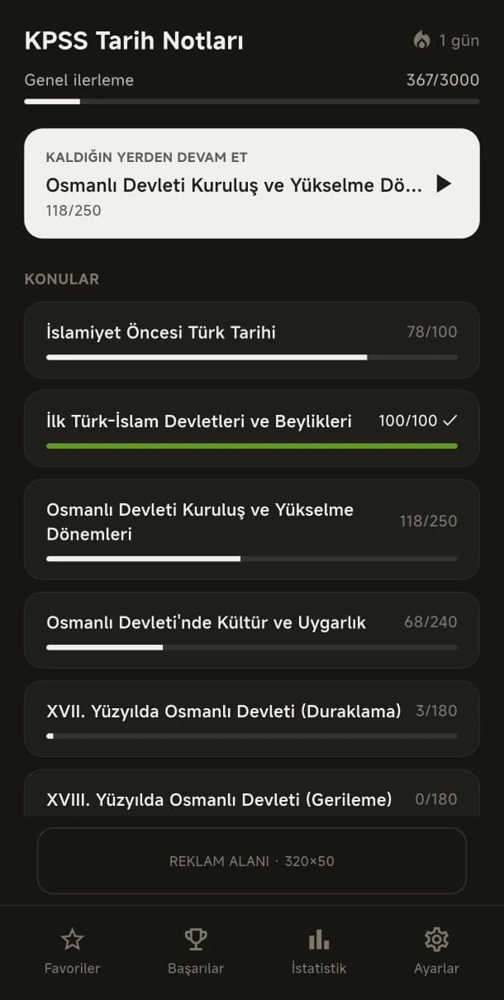
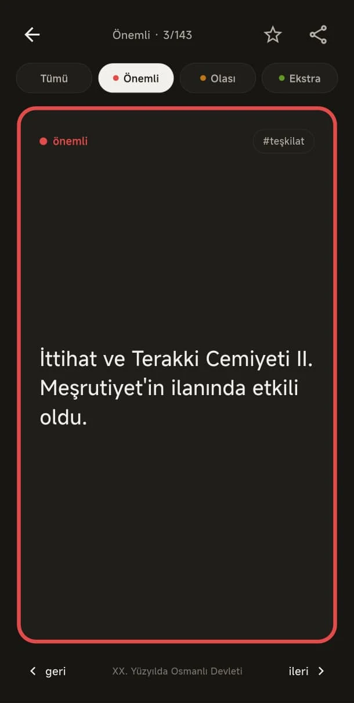
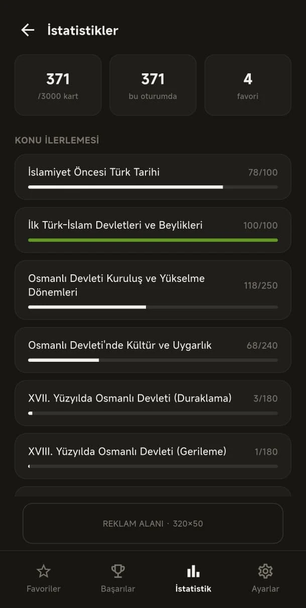

Her kart tek bir tarih bilgisini açık ve kısa biçimde sunar.
Eğitim & tarih · Google Play’de yayında
KPSS Tarih Notları
KPSS tarih kapsamındaki kısa bilgileri konu konu okuyun, kartlarla ilerleyin ve hangi başlıklarda ne kadar çalıştığınızı görün.
HEMENGoogle PlayAPP STOREÇok yakında



Uygulama hakkında
Tarih bilgisini küçük parçalara ayırın.
Uzun not sayfaları arasında kaybolmadan, tek bilgi taşıyan kısa kartlarla kronolojiyi ve temel bağlantıları kurmanıza yardımcı olur.
KPSS tarih kapsamını konu konu çalışın.
Bilgileri küçük parçalar hâlinde okuyarak tekrarınızı kolaylaştırın.
Konu bazındaki çalışma durumunuzu takip edin.
KPSS tarih tekrarınızı kartlarla hızlandırın.
Android uygulamasını Google Play üzerinden indirebilirsiniz.